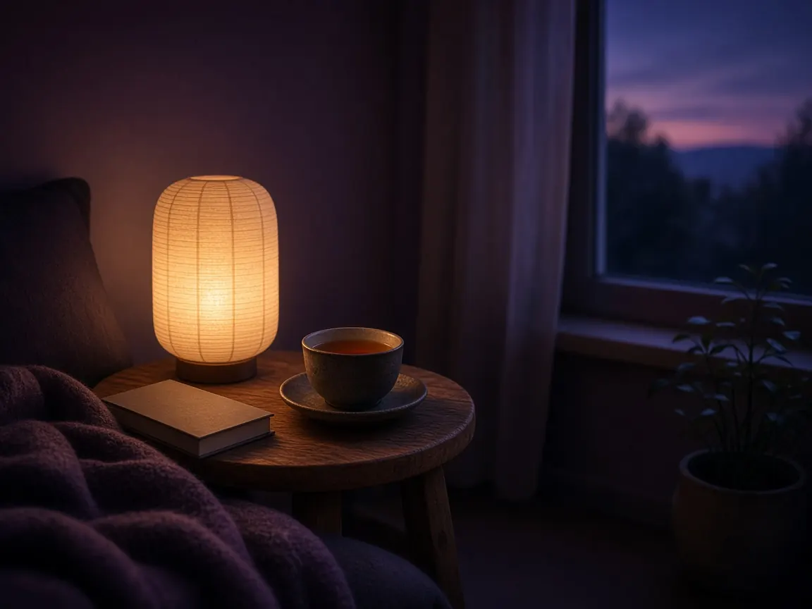

A 20-minute evening wind-down
We often treat sleep like a switch: we're busy, busy, busy, and then we lie down and expect the lights to go out. But for most of us, rest isn't a switch. It's more like a dimmer. The day needs to be turned down gradually, and the body and mind need a little time and a few clear signals that it's safe to let go.
An evening wind-down is simply a short, repeatable sequence that sends those signals. It doesn't need to be elaborate or perfect. Twenty minutes is plenty, and even five minutes of the same few steps, done most nights, can make the transition from day to night feel softer.
Why a routine helps
Bodies love rhythm. When we do the same small things in the same order each evening, the routine itself becomes a cue: this is the part of the day where we slow down. Over time, many people find that the first step alone, perhaps dimming the lamps or making a particular tea, begins to bring a sense of settling.
A routine also creates a buffer between the stimulating parts of the day and the moment you lie down. Instead of carrying the last email or the last scroll straight into bed, you give your thoughts a chance to land somewhere first.
Rest is not a reward for finishing everything. It is part of how we begin again.
The 20-minute wind-down, in four parts
1. Dim (5 minutes)
About an hour before you'd like to be asleep, begin lowering the lights. Switch overhead lights off in favour of a lamp or two, and if you can, put screens away or at least lower their brightness. Do a few tiny tidying tasks: clear the kitchen counter, lay out tomorrow's clothes, fill a glass of water. These small acts of closure tell the mind that the day is being wrapped up.
2. Set down (5 minutes)
Take a piece of paper or a notebook and write down anything still circling: tasks for tomorrow, worries, things you don't want to forget. You don't need to solve anything. The point is to move the thoughts from your head to the page, where they'll be waiting in the morning. Then write one small thing that went well today, however modest: a kind word, a good cup of coffee, a moment of sunlight.
3. Soften (5 minutes)
Now invite the body to slow down. You might do a few gentle stretches: rolling the shoulders, letting your head drop slowly side to side, folding forward over your legs. Or take a warm shower or bath. Then sit or lie down and take several slow breaths, letting each out-breath be a little longer than the in-breath. If you like, follow the guided wind-down video below.
4. Settle (5 minutes)
Get into bed and let the bed hold you. If you'd like, move into a short body scan, travelling slowly from your head to your toes. Or simply rest your attention on the feeling of your breath, or the weight of the blanket. If thoughts arrive, picture them as soft clouds drifting past a window. There's nothing you need to do with them tonight.
Small things that make a difference
- Choose a cue you enjoy. A favourite herbal tea, a particular candle, or a short piece of music can become your "evening signal."
- Keep it portable. If you travel, a few steps (writing, breathing, a body scan) can come with you anywhere.
- Be kind about imperfect nights. Late events and busy evenings will interrupt the routine sometimes. Just do one step, or start again tomorrow.
- Pair it with a morning practice. Our 5-minute morning meditation makes a lovely bookend to the day.
Tonight's wind-down checklist
Tick each step as you complete it this evening. Your progress is saved on this device; press "Clear ticks" in the morning to reuse the list night after night.
- Dim the lights and switch to lamps or candles, about an hour before bed.
- Put screens to bed, or turn the brightness right down and close busy apps.
- Do three tiny closing tasks: clear a surface, lay out clothes, fill a glass of water.
- Write down what's still circling so it can wait for tomorrow.
- Write one thing that went well today, however small.
- Soften the body with a few slow stretches or a warm shower.
- Take five long exhales, or follow the five-minute guided wind-down.
- Settle into bed with a short body scan, and let the night take over.
A gentle note
A calm evening routine supports rest, but it isn't a treatment for ongoing sleep difficulties. If poor sleep is affecting your daily life, or you snore heavily, wake gasping, or feel exhausted despite sleeping, please talk with a doctor. Sleep is precious, and you deserve support with it.

Written by Elrond
Founder of Willowhush. Practicing, forgetting, and beginning again, one breath at a time. More about Willowhush →